整理資料
Extraction, Transform and Load
需要的套件
library(ggplot2)
library(data.table)
library(dplyr)
library(reshape2)
Ben Chen
library(ggplot2)
library(data.table)
library(dplyr)
library(reshape2)
getwd()
## [1] "/Users/benjamin/Ben"
setwd('路徑')
tab補齊指令command(or control)+ enter執行source指令command(or control)+ shift+ c註解或解除註解command+ 1 滑鼠游標移至sourcecommand+ 2 滑鼠游標移至Consolecommand+ L 清除ConsoleUTF8或BIG5raw <- readLines('檔案路徑', n = 10, encoding = "BIG-5")
raw2 <- iconv(raw, from = "BIG-5", to = "UTF-8")
# 從big5轉utf8
write(raw2, "ubikeweatherutf8.csv")
# 存檔囉～～
ubike = read.csv('檔案路徑',
colClasses = c("factor","integer","integer","factor","factor",
"numeric","numeric","integer","numeric","integer",
"integer","numeric","numeric", "integer","integer",
"numeric","numeric","numeric", "numeric","numeric",
"numeric"),fileEncoding = 'utf8')
# 以colClasses控制每個欄位的class，這可使讀檔加速
# 以fileEncoding定義檔案編碼
##
Read 83.8% of 656711 rows
Read 656711 rows and 21 (of 21) columns from 0.108 GB file in 00:00:03
ubike = fread('檔案路徑',
data.table = FALSE,
colClasses = c("factor","integer","integer","factor",
"factor","numeric", "numeric", "integer",
"numeric", "integer","integer","numeric",
"numeric", "integer","integer","numeric",
"numeric","numeric", "numeric","numeric",
"numeric"))
| X1 | X2 | X3 | X4 |
|---|---|---|---|
| 日期 | date | 車輛數標準差 | std.sbi |
| 時間 | hour | 平均空位數 | avg.bemp |
| 場站代號 | sno | 最大空位數 | max.bemp |
| 場站區域 | sarea | 最小空位數 | min.bemp |
| 場站名稱 | sna | 空位數標準差 | std.bemp |
| 緯度 | lat | 平均氣溫 | temp |
| 經度 | lng | 溼度 | humidity |
| 總停車格 | tot | 氣壓 | pressure |
| 平均車輛數 | avg.sbi | 最大風速 | max.anemo |
| 最大車輛數 | max.sbi | 降雨量 | rainfall |
| 最小車輛數 | min.sbi |
colnames(ubike) <-
c("日期", "時間", "場站代號", "場站區域", "場站名稱",
"緯度", "經度", "總停車格", "平均車輛數", "最大車輛數",
"最小車輛數", "車輛數標準差", "平均空位數", "最大空位數",
"最小空位數", "空位數標準差", "平均氣溫", "溼度",
"氣壓", "最大風速", "降雨量")
# head可以取出前幾列
head(ubike)
# tail可以取最後幾列
tail(ubike)
# 利用座標來取值，第一個數表示列位，第二個數表示欄位
ubike[3,2]
# 可一次選擇多列多欄
ubike[c(3:4),c(2:5,7)]
# 加上負號可剔除列位欄位
ubike[c(3:4),-c(6:21)]
ubike[,4]
ubike[,"sna"]
ubike[["sna"]]
ubike$場站名稱
magrittr部份解決了這個問題ans1 <- ubike$sna
ans1.1 <- unique(ans1) # unique可列出所有不重複的項目
unique(ubike$sna)
library(magrittr)
ubike$sna %>%
unique
data.frame做設計（名稱中的d）data.frame或資料庫中的表格）vignettevignette(all = TRUE, package = "dplyr")
vignette("introduction", package = "dplyr")
filter 對列做篩選select 對欄做篩選mutate 更改欄或新增欄arrange 排列group_by+summarise 分類| sna | avg_rate |
|---|---|
| 中和公園 | 13.56075 |
| 捷運永安市場站 | 17.51402 |
| 中和國民運動中心 | 27.63830 |
| 秀山國小 | 29.25234 |
 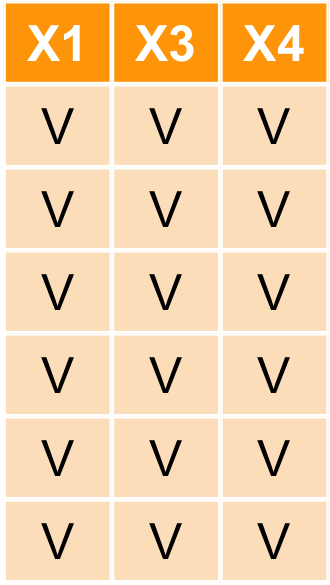
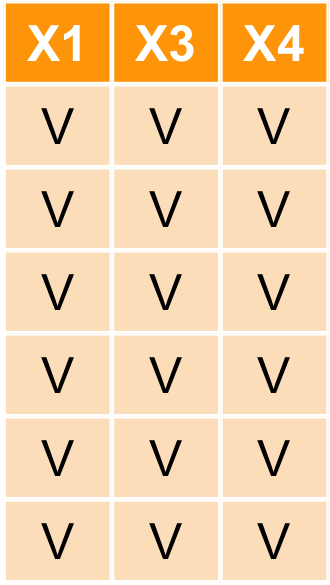
ubike1<- select(ubike,hour,sarea,sna,avg.sbi)
| hour | sarea | sna | avg.sbi |
|---|---|---|---|
| 15 | 信義區 | 捷運市政府站(3號出口) | 96.500 |
| 15 | 大安區 | 捷運國父紀念館站(2號出口) | 24.000 |
| 15 | 信義區 | 台北市政府 | 10.333 |
| 15 | 信義區 | 市民廣場 | 39.333 |
| 15 | 信義區 | 興雅國中 | 34.167 |
| 15 | 信義區 | 世貿二館 | 31.333 |


ubike1<- select(ubike,hour,sarea,sna,avg.sbi) %>%
filter(sarea=='中和區' & hour==7)
| hour | sarea | sna | avg.sbi |
|---|---|---|---|
| 7 | 中和區 | 秀山國小 | 0.000 |
| 7 | 中和區 | 捷運永安市場站 | 1.733 |
| 7 | 中和區 | 中和公園 | 0.267 |
| 7 | 中和區 | 秀山國小 | 33.800 |
| 7 | 中和區 | 捷運永安市場站 | 6.467 |
| 7 | 中和區 | 中和公園 | 4.600 |
| 7 | 中和區 | 秀山國小 | 37.400 |
| 7 | 中和區 | 捷運永安市場站 | 12.867 |
| 7 | 中和區 | 中和公園 | 1.467 |
| 7 | 中和區 | 秀山國小 | 31.867 |
| 7 | 中和區 | 捷運永安市場站 | 19.267 |
| 7 | 中和區 | 中和公園 | 29.067 |
| 7 | 中和區 | 捷運永安市場站 | 13.600 |
| 7 | 中和區 | 中和公園 | 6.133 |
| 7 | 中和區 | 秀山國小 | 38.600 |
| 7 | 中和區 | 秀山國小 | 33.000 |
| 7 | 中和區 | 捷運永安市場站 | 1.600 |
| 7 | 中和區 | 中和公園 | 9.200 |
| 7 | 中和區 | 秀山國小 | 24.067 |
| 7 | 中和區 | 捷運永安市場站 | 4.733 |
| 7 | 中和區 | 中和公園 | 6.933 |
| 7 | 中和區 | 秀山國小 | 26.367 |
| 7 | 中和區 | 捷運永安市場站 | 20.867 |
| 7 | 中和區 | 中和公園 | 6.633 |
| 7 | 中和區 | 秀山國小 | 17.655 |
| 7 | 中和區 | 捷運永安市場站 | 7.931 |
| 7 | 中和區 | 中和公園 | 17.862 |
| 7 | 中和區 | 秀山國小 | 22.333 |
| 7 | 中和區 | 捷運永安市場站 | 13.333 |
| 7 | 中和區 | 中和公園 | 8.067 |
| 7 | 中和區 | 秀山國小 | 10.100 |
| 7 | 中和區 | 捷運永安市場站 | 6.533 |
| 7 | 中和區 | 中和公園 | 21.767 |
| 7 | 中和區 | 秀山國小 | 43.333 |
| 7 | 中和區 | 捷運永安市場站 | 13.600 |
| 7 | 中和區 | 中和公園 | 12.000 |
| 7 | 中和區 | 秀山國小 | 41.241 |
| 7 | 中和區 | 捷運永安市場站 | 6.207 |
| 7 | 中和區 | 中和公園 | 8.133 |
| 7 | 中和區 | 秀山國小 | 25.345 |
| 7 | 中和區 | 中和公園 | 2.414 |
| 7 | 中和區 | 捷運永安市場站 | 2.400 |
| 7 | 中和區 | 秀山國小 | 35.400 |
| 7 | 中和區 | 捷運永安市場站 | 10.000 |
| 7 | 中和區 | 中和公園 | 2.400 |
| 7 | 中和區 | 秀山國小 | 25.233 |
| 7 | 中和區 | 捷運永安市場站 | 1.167 |
| 7 | 中和區 | 中和公園 | 5.767 |
| 7 | 中和區 | 秀山國小 | 17.867 |
| 7 | 中和區 | 捷運永安市場站 | 16.333 |
| 7 | 中和區 | 中和公園 | 26.133 |
| 7 | 中和區 | 秀山國小 | 28.345 |
| 7 | 中和區 | 捷運永安市場站 | 13.724 |
| 7 | 中和區 | 中和公園 | 3.690 |
| 7 | 中和區 | 中和公園 | 7.000 |
| 7 | 中和區 | 秀山國小 | 18.536 |
| 7 | 中和區 | 捷運永安市場站 | 8.714 |
| 7 | 中和區 | 捷運永安市場站 | 23.167 |
| 7 | 中和區 | 秀山國小 | 23.828 |
| 7 | 中和區 | 中和公園 | 32.000 |
| 7 | 中和區 | 中和公園 | 4.100 |
| 7 | 中和區 | 秀山國小 | 25.241 |
| 7 | 中和區 | 捷運永安市場站 | 7.828 |
| 7 | 中和區 | 秀山國小 | 24.333 |
| 7 | 中和區 | 捷運永安市場站 | 7.400 |
| 7 | 中和區 | 中和公園 | 10.400 |
| 7 | 中和區 | 秀山國小 | 25.607 |
| 7 | 中和區 | 捷運永安市場站 | 8.800 |
| 7 | 中和區 | 中和公園 | 25.600 |
| 7 | 中和區 | 秀山國小 | 50.533 |
| 7 | 中和區 | 捷運永安市場站 | 2.178 |
| 7 | 中和區 | 中和公園 | 0.956 |
| 7 | 中和區 | 秀山國小 | 48.167 |
| 7 | 中和區 | 捷運永安市場站 | 18.714 |
| 7 | 中和區 | 中和公園 | 16.571 |
| 7 | 中和區 | 秀山國小 | 28.978 |
| 7 | 中和區 | 捷運永安市場站 | 8.356 |
| 7 | 中和區 | 中和公園 | 19.533 |
| 7 | 中和區 | 秀山國小 | 47.600 |
| 7 | 中和區 | 捷運永安市場站 | 16.800 |
| 7 | 中和區 | 中和公園 | 16.867 |
| 7 | 中和區 | 秀山國小 | 26.067 |
| 7 | 中和區 | 捷運永安市場站 | 16.711 |
| 7 | 中和區 | 中和公園 | 5.977 |
| 7 | 中和區 | 秀山國小 | 25.711 |
| 7 | 中和區 | 中和公園 | 16.022 |
| 7 | 中和區 | 捷運永安市場站 | 11.419 |
| 7 | 中和區 | 捷運永安市場站 | 16.644 |
| 7 | 中和區 | 秀山國小 | 7.267 |
| 7 | 中和區 | 中和公園 | 16.556 |
| 7 | 中和區 | 秀山國小 | 9.523 |
| 7 | 中和區 | 捷運永安市場站 | 28.778 |
| 7 | 中和區 | 中和公園 | 21.067 |
| 7 | 中和區 | 秀山國小 | 35.333 |
| 7 | 中和區 | 捷運永安市場站 | 17.311 |
| 7 | 中和區 | 中和公園 | 11.133 |
| 7 | 中和區 | 中和公園 | 14.978 |
| 7 | 中和區 | 秀山國小 | 37.578 |
| 7 | 中和區 | 捷運永安市場站 | 21.533 |
| 7 | 中和區 | 秀山國小 | 37.512 |
| 7 | 中和區 | 捷運永安市場站 | 22.488 |
| 7 | 中和區 | 中和公園 | 22.558 |
| 7 | 中和區 | 秀山國小 | 3.089 |
| 7 | 中和區 | 捷運永安市場站 | 27.778 |
| 7 | 中和區 | 中和公園 | 11.511 |
| 7 | 中和區 | 秀山國小 | 5.397 |
| 7 | 中和區 | 捷運永安市場站 | 22.362 |
| 7 | 中和區 | 中和公園 | 20.483 |
| 7 | 中和區 | 秀山國小 | 20.100 |
| 7 | 中和區 | 捷運永安市場站 | 23.729 |
| 7 | 中和區 | 中和公園 | 16.800 |
| 7 | 中和區 | 秀山國小 | 24.950 |
| 7 | 中和區 | 捷運永安市場站 | 7.136 |
| 7 | 中和區 | 中和公園 | 15.583 |
| 7 | 中和區 | 秀山國小 | 36.133 |
| 7 | 中和區 | 捷運永安市場站 | 12.683 |
| 7 | 中和區 | 中和公園 | 18.683 |
| 7 | 中和區 | 秀山國小 | 33.831 |
| 7 | 中和區 | 捷運永安市場站 | 15.492 |
| 7 | 中和區 | 中和公園 | 11.220 |
| 7 | 中和區 | 秀山國小 | 42.966 |
| 7 | 中和區 | 捷運永安市場站 | 21.983 |
| 7 | 中和區 | 中和公園 | 12.237 |
| 7 | 中和區 | 秀山國小 | 16.254 |
| 7 | 中和區 | 捷運永安市場站 | 7.492 |
| 7 | 中和區 | 中和公園 | 11.661 |
| 7 | 中和區 | 秀山國小 | 20.864 |
| 7 | 中和區 | 捷運永安市場站 | 18.068 |
| 7 | 中和區 | 中和公園 | 14.915 |
| 7 | 中和區 | 秀山國小 | 31.136 |
| 7 | 中和區 | 捷運永安市場站 | 20.746 |
| 7 | 中和區 | 中和公園 | 11.051 |
| 7 | 中和區 | 秀山國小 | 27.136 |
| 7 | 中和區 | 捷運永安市場站 | 18.373 |
| 7 | 中和區 | 中和公園 | 5.949 |
| 7 | 中和區 | 秀山國小 | 32.500 |
| 7 | 中和區 | 捷運永安市場站 | 21.483 |
| 7 | 中和區 | 中和公園 | 11.750 |
| 7 | 中和區 | 秀山國小 | 33.300 |
| 7 | 中和區 | 捷運永安市場站 | 43.733 |
| 7 | 中和區 | 中和公園 | 25.300 |
| 7 | 中和區 | 秀山國小 | 44.350 |
| 7 | 中和區 | 捷運永安市場站 | 28.000 |
| 7 | 中和區 | 中和公園 | 6.000 |
| 7 | 中和區 | 秀山國小 | 17.800 |
| 7 | 中和區 | 捷運永安市場站 | 14.683 |
| 7 | 中和區 | 中和公園 | 8.917 |
| 7 | 中和區 | 秀山國小 | 25.610 |
| 7 | 中和區 | 捷運永安市場站 | 6.593 |
| 7 | 中和區 | 中和公園 | 6.729 |
| 7 | 中和區 | 秀山國小 | 36.633 |
| 7 | 中和區 | 捷運永安市場站 | 7.683 |
| 7 | 中和區 | 中和公園 | 8.733 |
| 7 | 中和區 | 秀山國小 | 43.683 |
| 7 | 中和區 | 捷運永安市場站 | 15.933 |
| 7 | 中和區 | 中和公園 | 7.383 |
| 7 | 中和區 | 秀山國小 | 42.517 |
| 7 | 中和區 | 捷運永安市場站 | 19.967 |
| 7 | 中和區 | 中和公園 | 8.883 |
| 7 | 中和區 | 秀山國小 | 39.017 |
| 7 | 中和區 | 捷運永安市場站 | 10.431 |
| 7 | 中和區 | 中和公園 | 26.345 |
| 7 | 中和區 | 秀山國小 | 31.133 |
| 7 | 中和區 | 捷運永安市場站 | 10.133 |
| 7 | 中和區 | 中和公園 | 27.000 |
| 7 | 中和區 | 秀山國小 | 15.117 |
| 7 | 中和區 | 捷運永安市場站 | 19.017 |
| 7 | 中和區 | 中和公園 | 6.783 |
| 7 | 中和區 | 秀山國小 | 45.800 |
| 7 | 中和區 | 捷運永安市場站 | 12.800 |
| 7 | 中和區 | 中和公園 | 8.983 |
| 7 | 中和區 | 秀山國小 | 36.267 |
| 7 | 中和區 | 捷運永安市場站 | 12.333 |
| 7 | 中和區 | 中和公園 | 12.267 |
| 7 | 中和區 | 秀山國小 | 37.638 |
| 7 | 中和區 | 捷運永安市場站 | 7.069 |
| 7 | 中和區 | 中和公園 | 5.707 |
| 7 | 中和區 | 秀山國小 | 50.617 |
| 7 | 中和區 | 捷運永安市場站 | 5.900 |
| 7 | 中和區 | 中和公園 | 10.583 |
| 7 | 中和區 | 秀山國小 | 34.750 |
| 7 | 中和區 | 捷運永安市場站 | 17.033 |
| 7 | 中和區 | 中和公園 | 23.733 |
| 7 | 中和區 | 中和國民運動中心 | 28.000 |
| 7 | 中和區 | 秀山國小 | 33.483 |
| 7 | 中和區 | 捷運永安市場站 | 21.966 |
| 7 | 中和區 | 中和公園 | 17.897 |
| 7 | 中和區 | 中和國民運動中心 | 31.569 |
| 7 | 中和區 | 秀山國小 | 24.867 |
| 7 | 中和區 | 捷運永安市場站 | 7.633 |
| 7 | 中和區 | 中和公園 | 2.667 |
| 7 | 中和區 | 中和國民運動中心 | 25.000 |
| 7 | 中和區 | 秀山國小 | 34.300 |
| 7 | 中和區 | 捷運永安市場站 | 14.900 |
| 7 | 中和區 | 中和公園 | 5.000 |
| 7 | 中和區 | 中和國民運動中心 | 24.000 |
| 7 | 中和區 | 秀山國小 | 23.569 |
| 7 | 中和區 | 捷運永安市場站 | 16.948 |
| 7 | 中和區 | 中和公園 | 12.776 |
| 7 | 中和區 | 中和國民運動中心 | 21.017 |
| 7 | 中和區 | 秀山國小 | 37.800 |
| 7 | 中和區 | 捷運永安市場站 | 7.783 |
| 7 | 中和區 | 中和公園 | 11.650 |
| 7 | 中和區 | 中和國民運動中心 | 22.350 |
| 7 | 中和區 | 秀山國小 | 38.583 |
| 7 | 中和區 | 捷運永安市場站 | 14.933 |
| 7 | 中和區 | 中和公園 | 7.217 |
| 7 | 中和區 | 中和國民運動中心 | 10.667 |
| 7 | 中和區 | 秀山國小 | 28.153 |
| 7 | 中和區 | 捷運永安市場站 | 12.746 |
| 7 | 中和區 | 中和公園 | 14.000 |
| 7 | 中和區 | 中和國民運動中心 | 18.678 |
| 7 | 中和區 | 秀山國小 | 26.339 |
| 7 | 中和區 | 捷運永安市場站 | 12.644 |
| 7 | 中和區 | 中和公園 | 8.203 |
| 7 | 中和區 | 中和國民運動中心 | 30.305 |
| 7 | 中和區 | 秀山國小 | 31.649 |
| 7 | 中和區 | 捷運永安市場站 | 18.965 |
| 7 | 中和區 | 中和公園 | 14.877 |
| 7 | 中和區 | 中和國民運動中心 | 29.825 |
| 7 | 中和區 | 秀山國小 | 16.817 |
| 7 | 中和區 | 捷運永安市場站 | 15.067 |
| 7 | 中和區 | 中和公園 | 17.800 |
| 7 | 中和區 | 中和國民運動中心 | 28.133 |
| 7 | 中和區 | 秀山國小 | 39.000 |
| 7 | 中和區 | 捷運永安市場站 | 14.143 |
| 7 | 中和區 | 中和公園 | 9.000 |
| 7 | 中和區 | 中和國民運動中心 | 36.000 |
| 7 | 中和區 | 秀山國小 | 24.067 |
| 7 | 中和區 | 捷運永安市場站 | 23.650 |
| 7 | 中和區 | 中和公園 | 10.817 |
| 7 | 中和區 | 中和國民運動中心 | 31.233 |
| 7 | 中和區 | 秀山國小 | 35.133 |
| 7 | 中和區 | 捷運永安市場站 | 4.733 |
| 7 | 中和區 | 中和公園 | 1.867 |
| 7 | 中和區 | 中和國民運動中心 | 30.667 |
| 7 | 中和區 | 中和公園 | 16.333 |
| 7 | 中和區 | 秀山國小 | 34.267 |
| 7 | 中和區 | 捷運永安市場站 | 15.067 |
| 7 | 中和區 | 中和國民運動中心 | 28.600 |
| 7 | 中和區 | 秀山國小 | 26.400 |
| 7 | 中和區 | 捷運永安市場站 | 29.267 |
| 7 | 中和區 | 中和公園 | 15.533 |
| 7 | 中和區 | 中和國民運動中心 | 18.800 |
| 7 | 中和區 | 秀山國小 | 42.267 |
| 7 | 中和區 | 捷運永安市場站 | 33.467 |
| 7 | 中和區 | 中和公園 | 25.733 |
| 7 | 中和區 | 中和國民運動中心 | 28.800 |
| 7 | 中和區 | 秀山國小 | 27.267 |
| 7 | 中和區 | 捷運永安市場站 | 25.733 |
| 7 | 中和區 | 中和公園 | 21.333 |
| 7 | 中和區 | 中和國民運動中心 | 27.000 |
| 7 | 中和區 | 秀山國小 | 27.400 |
| 7 | 中和區 | 捷運永安市場站 | 28.667 |
| 7 | 中和區 | 中和公園 | 12.133 |
| 7 | 中和區 | 中和國民運動中心 | 33.000 |
| 7 | 中和區 | 秀山國小 | 15.133 |
| 7 | 中和區 | 捷運永安市場站 | 22.067 |
| 7 | 中和區 | 中和公園 | 11.867 |
| 7 | 中和區 | 中和國民運動中心 | 32.133 |
| 7 | 中和區 | 秀山國小 | 22.800 |
| 7 | 中和區 | 捷運永安市場站 | 16.000 |
| 7 | 中和區 | 中和公園 | 11.867 |
| 7 | 中和區 | 中和國民運動中心 | 30.800 |
| 7 | 中和區 | 秀山國小 | 45.600 |
| 7 | 中和區 | 捷運永安市場站 | 40.467 |
| 7 | 中和區 | 中和公園 | 18.000 |
| 7 | 中和區 | 中和國民運動中心 | 26.000 |
| 7 | 中和區 | 秀山國小 | 31.333 |
| 7 | 中和區 | 捷運永安市場站 | 8.733 |
| 7 | 中和區 | 中和公園 | 11.867 |
| 7 | 中和區 | 中和國民運動中心 | 35.000 |
| 7 | 中和區 | 秀山國小 | 36.267 |
| 7 | 中和區 | 捷運永安市場站 | 29.267 |
| 7 | 中和區 | 中和公園 | 25.133 |
| 7 | 中和區 | 中和國民運動中心 | 30.600 |
| 7 | 中和區 | 秀山國小 | 9.133 |
| 7 | 中和區 | 捷運永安市場站 | 22.133 |
| 7 | 中和區 | 中和公園 | 18.133 |
| 7 | 中和區 | 中和國民運動中心 | 21.600 |
| 7 | 中和區 | 秀山國小 | 37.600 |
| 7 | 中和區 | 捷運永安市場站 | 28.200 |
| 7 | 中和區 | 中和公園 | 16.067 |
| 7 | 中和區 | 中和國民運動中心 | 25.000 |
| 7 | 中和區 | 秀山國小 | 32.400 |
| 7 | 中和區 | 捷運永安市場站 | 51.333 |
| 7 | 中和區 | 中和公園 | 17.867 |
| 7 | 中和區 | 中和國民運動中心 | 24.600 |
| 7 | 中和區 | 秀山國小 | 19.933 |
| 7 | 中和區 | 捷運永安市場站 | 46.400 |
| 7 | 中和區 | 中和公園 | 24.133 |
| 7 | 中和區 | 中和國民運動中心 | 23.000 |
| 7 | 中和區 | 秀山國小 | 21.857 |
| 7 | 中和區 | 捷運永安市場站 | 21.500 |
| 7 | 中和區 | 中和公園 | 24.714 |
| 7 | 中和區 | 中和國民運動中心 | 24.500 |
| 7 | 中和區 | 秀山國小 | 33.800 |
| 7 | 中和區 | 捷運永安市場站 | 14.800 |
| 7 | 中和區 | 中和公園 | 4.067 |
| 7 | 中和區 | 中和國民運動中心 | 40.000 |
| 7 | 中和區 | 秀山國小 | 46.733 |
| 7 | 中和區 | 捷運永安市場站 | 9.400 |
| 7 | 中和區 | 中和公園 | 8.067 |
| 7 | 中和區 | 中和國民運動中心 | 42.333 |
| 7 | 中和區 | 秀山國小 | 28.400 |
| 7 | 中和區 | 捷運永安市場站 | 8.667 |
| 7 | 中和區 | 中和公園 | 2.867 |
| 7 | 中和區 | 中和國民運動中心 | 25.867 |
| 7 | 中和區 | 秀山國小 | 32.333 |
| 7 | 中和區 | 捷運永安市場站 | 23.867 |
| 7 | 中和區 | 中和公園 | 35.400 |
| 7 | 中和區 | 中和國民運動中心 | 33.933 |
| 7 | 中和區 | 秀山國小 | 36.200 |
| 7 | 中和區 | 捷運永安市場站 | 34.200 |
| 7 | 中和區 | 中和公園 | 18.400 |
| 7 | 中和區 | 中和國民運動中心 | 26.200 |
| 7 | 中和區 | 秀山國小 | 28.400 |
| 7 | 中和區 | 捷運永安市場站 | 15.533 |
| 7 | 中和區 | 中和公園 | 11.067 |
| 7 | 中和區 | 中和國民運動中心 | 27.267 |
| 7 | 中和區 | 秀山國小 | 19.267 |
| 7 | 中和區 | 捷運永安市場站 | 35.600 |
| 7 | 中和區 | 中和公園 | 28.133 |
| 7 | 中和區 | 中和國民運動中心 | 25.600 |
| 7 | 中和區 | 秀山國小 | 32.857 |
| 7 | 中和區 | 捷運永安市場站 | 46.786 |
| 7 | 中和區 | 中和公園 | 31.429 |
| 7 | 中和區 | 中和國民運動中心 | 35.286 |
| 7 | 中和區 | 秀山國小 | 35.067 |
| 7 | 中和區 | 捷運永安市場站 | 35.600 |
| 7 | 中和區 | 中和公園 | 25.400 |
| 7 | 中和區 | 中和國民運動中心 | 36.533 |
| 7 | 中和區 | 秀山國小 | 26.933 |
| 7 | 中和區 | 捷運永安市場站 | 34.067 |
| 7 | 中和區 | 中和公園 | 24.000 |
| 7 | 中和區 | 中和國民運動中心 | 29.000 |
| 7 | 中和區 | 秀山國小 | 34.867 |
| 7 | 中和區 | 捷運永安市場站 | 42.467 |
| 7 | 中和區 | 中和公園 | 26.933 |
| 7 | 中和區 | 中和國民運動中心 | 29.667 |
| 7 | 中和區 | 秀山國小 | 27.714 |
| 7 | 中和區 | 捷運永安市場站 | 10.857 |
| 7 | 中和區 | 中和公園 | 7.000 |
| 7 | 中和區 | 中和國民運動中心 | 33.000 |
| 7 | 中和區 | 秀山國小 | 36.357 |
| 7 | 中和區 | 捷運永安市場站 | 28.786 |
| 7 | 中和區 | 中和公園 | 14.357 |
| 7 | 中和區 | 中和國民運動中心 | 30.000 |
| 7 | 中和區 | 秀山國小 | 35.467 |
| 7 | 中和區 | 捷運永安市場站 | 17.800 |
| 7 | 中和區 | 中和公園 | 17.733 |
| 7 | 中和區 | 中和國民運動中心 | 21.000 |
| 7 | 中和區 | 秀山國小 | 37.533 |
| 7 | 中和區 | 捷運永安市場站 | 44.667 |
| 7 | 中和區 | 中和公園 | 18.667 |
| 7 | 中和區 | 中和國民運動中心 | 27.000 |
| 7 | 中和區 | 秀山國小 | 33.400 |
| 7 | 中和區 | 捷運永安市場站 | 23.067 |
| 7 | 中和區 | 中和公園 | 32.267 |
| 7 | 中和區 | 中和國民運動中心 | 27.800 |
| 7 | 中和區 | 秀山國小 | 4.333 |
| 7 | 中和區 | 捷運永安市場站 | 14.600 |
| 7 | 中和區 | 中和公園 | 4.667 |
| 7 | 中和區 | 中和國民運動中心 | 20.133 |
| 7 | 中和區 | 秀山國小 | 33.133 |
| 7 | 中和區 | 捷運永安市場站 | 27.933 |
| 7 | 中和區 | 中和公園 | 17.867 |
| 7 | 中和區 | 中和國民運動中心 | 27.867 |


ubike1<- select(ubike,hour,sarea,sna,avg.sbi) %>%
filter(sarea=='中和區' & hour==7) %>%
mutate(avg.sbi=floor(avg.sbi))
| hour | sarea | sna | avg.sbi |
|---|---|---|---|
| 7 | 中和區 | 秀山國小 | 0 |
| 7 | 中和區 | 捷運永安市場站 | 1 |
| 7 | 中和區 | 中和公園 | 0 |
| 7 | 中和區 | 秀山國小 | 33 |
| 7 | 中和區 | 捷運永安市場站 | 6 |
| 7 | 中和區 | 中和公園 | 4 |

ubike1<- select(ubike,hour,sarea,sna,avg.sbi) %>%
filter(sarea=='中和區' & hour==7) %>%
mutate(avg.sbi=floor(avg.sbi)) %>%
group_by(sna)
ubike1
## Source: local data frame [368 x 4]
## Groups: sna [4]
##
## hour sarea sna avg.sbi
## (int) (chr) (chr) (dbl)
## 1 7 中和區 秀山國小 0
## 2 7 中和區 捷運永安市場站 1
## 3 7 中和區 中和公園 0
## 4 7 中和區 秀山國小 33
## 5 7 中和區 捷運永安市場站 6
## 6 7 中和區 中和公園 4
## 7 7 中和區 秀山國小 37
## 8 7 中和區 捷運永安市場站 12
## 9 7 中和區 中和公園 1
## 10 7 中和區 秀山國小 31
## .. ... ... ... ...

ubike1<- select(ubike,hour,sarea,sna,avg.sbi) %>%
filter(sarea=='中和區' & hour==7) %>%
mutate(avg.sbi=floor(avg.sbi)) %>%
group_by(sna) %>%
summarise(avg_rate=mean(avg.sbi))
| sna | avg_rate |
|---|---|
| 捷運永安市場站 | 17.51402 |
| 秀山國小 | 29.25234 |
| 中和公園 | 13.56075 |
| 中和國民運動中心 | 27.63830 |
 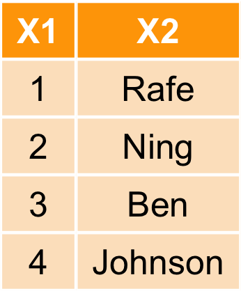
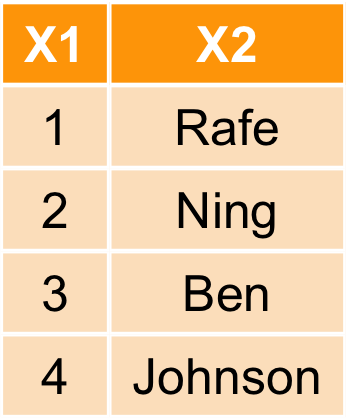
ubike1<- select(ubike,hour,sarea,sna,avg.sbi) %>%
filter(sarea=='中和區' & hour==7) %>%
mutate(avg.sbi=floor(avg.sbi)) %>%
group_by(sna) %>%
summarise(avg_rate=mean(avg.sbi)) %>%
arrange(avg_rate)
| sna | avg_rate |
|---|---|
| 中和公園 | 13.56075 |
| 捷運永安市場站 | 17.51402 |
| 中和國民運動中心 | 27.63830 |
| 秀山國小 | 29.25234 |
| sna | avg_rate |
|---|---|
| 永安公園 | 15.00000 |
| 捷運江子翠站(3號出口) | 23.33333 |
| 音樂公園 | 23.66667 |
| 板橋國民運動中心 | 24.33333 |
| sna | avg_anemo |
|---|---|
| 捷運永安市場站 | 2.609531 |
| 秀山國小 | 3.033534 |
| 中和公園 | 2.698973 |
| 中和國民運動中心 | 2.177059 |
bind_rows(a,b)
bind_cols(a,b)

bind_rows(a,b)

bind_cols(a,b)

bind_rows(ubike1,ubike2)
## Source: local data frame [8 x 2]
##
## sna avg_rate
## (chr) (dbl)
## 1 中和公園 13.56075
## 2 捷運永安市場站 17.51402
## 3 中和國民運動中心 27.63830
## 4 秀山國小 29.25234
## 5 永安公園 15.00000
## 6 捷運江子翠站(3號出口) 23.33333
## 7 音樂公園 23.66667
## 8 板橋國民運動中心 24.33333
bind_cols(ubike1,ubike3)
## Source: local data frame [4 x 4]
##
## sna avg_rate
## (chr) (dbl)
## 1 中和公園 13.56075
## 2 捷運永安市場站 17.51402
## 3 中和國民運動中心 27.63830
## 4 秀山國小 29.25234
## sna
## (chr)
## 1 捷運永安市場站
## 2 秀山國小
## 3 中和公園
## 4 中和國民運動中心
## Variables not shown: avg_anemo (dbl)
left_join(a,b,by=X1)
right_join(a,b,by=X1)
inner_join(a,b,by=X1)
full_join(a,by=X1)
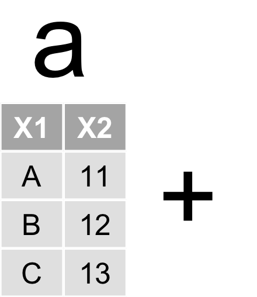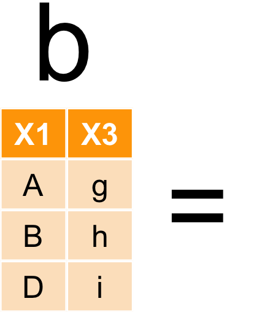
left_join(a,b,by=X1)
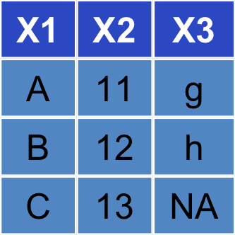
right_join(a,b,by=X1)
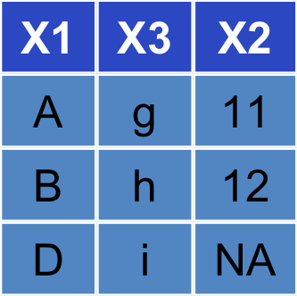
inner_join(a,b,by=X1)
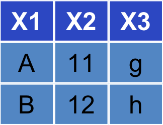
full_join(a,b,by=X1)
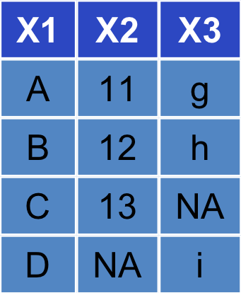
left_join(ubike1,ubike3)
## Joining by: "sna"
## Source: local data frame [4 x 3]
##
## sna avg_rate avg_anemo
## (chr) (dbl) (dbl)
## 1 中和公園 13.56075 2.698973
## 2 捷運永安市場站 17.51402 2.609531
## 3 中和國民運動中心 27.63830 2.177059
## 4 秀山國小 29.25234 3.033534
intersect(a,b)
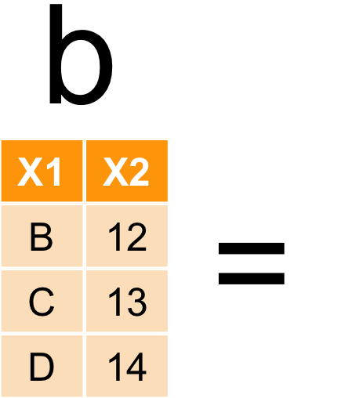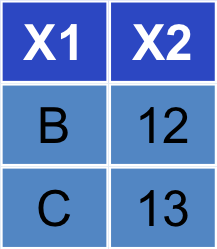
union(a,b)
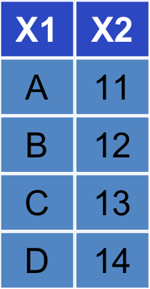
setdiff(a,b)
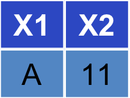
dcast for data.frameacast for vector, matrix and arrayWP.melt=as.data.frame(WorldPhones)
WP.melt$year <- rownames(WP.melt)
WP.melt=melt(WP.melt,id='year')
kable(head(WP.melt))
| year | variable | value |
|---|---|---|
| 1951 | N.Amer | 45939 |
| 1956 | N.Amer | 60423 |
| 1957 | N.Amer | 64721 |
| 1958 | N.Amer | 68484 |
| 1959 | N.Amer | 71799 |
| 1960 | N.Amer | 76036 |
WP.cast=dcast(WP.melt,year~variable,value.var="value")
kable(WP.cast)
| year | N.Amer | Europe | Asia | S.Amer | Oceania | Africa | Mid.Amer |
|---|---|---|---|---|---|---|---|
| 1951 | 45939 | 21574 | 2876 | 1815 | 1646 | 89 | 555 |
| 1956 | 60423 | 29990 | 4708 | 2568 | 2366 | 1411 | 733 |
| 1957 | 64721 | 32510 | 5230 | 2695 | 2526 | 1546 | 773 |
| 1958 | 68484 | 35218 | 6662 | 2845 | 2691 | 1663 | 836 |
| 1959 | 71799 | 37598 | 6856 | 3000 | 2868 | 1769 | 911 |
| 1960 | 76036 | 40341 | 8220 | 3145 | 3054 | 1905 | 1008 |
| 1961 | 79831 | 43173 | 9053 | 3338 | 3224 | 2005 | 1076 |
filter、mutate、select、group_by、summarisedcast| sna | 晴天 | 雨天 |
|---|---|---|
| 捷運永安市場站 | 0.6671052 | 0.6483044 |
| 秀山國小 | 0.4966519 | 0.4436588 |
| 中和公園 | 0.6363115 | 0.5917228 |
| 中和國民運動中心 | 0.4571795 | 0.4603829 |